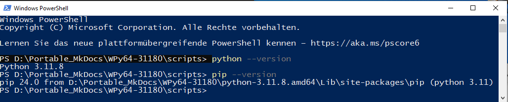
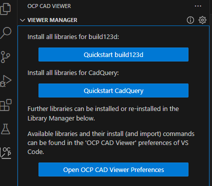

Visual Studio Code Windows Portable Setup for build123d
1) Python enviroment for build123d¶
Download WinPython 3.11.8 from Sourceforge: WinPython - 3.11.8
You find all WinPython Versions under this link: WinPython
WinPython is a portable setup of the Python runtime enviroment for windows.
After downloading the file double click it (and thus execute it). You might need to tell windows or your browser that the file is safe and that you want to keep it and that you want to execute it.
After starting you will be asked to extract it. Choose a location where you want your files to be extracted to.
For example: D:\Portable_build123d
Thats it your Python enviroment is setup and ready to run.
To verify go into the directory where you installed your Python enviroment (D:\Portable_MkDocs\WPy64-31180) and start "WinPython Powershell Prompt.exe".
This will open the windows Powershell. You can check your Python version by typing: python --version. Also check if your paket manager pip is installed by typing: pip --version

2) Install Visual Studio Code¶
Next you need to download Visual Studio Code but you need to select the ZIP version for X86:
Download Visual Studio Code
Extract the downloaded file into the Folder D:\Portable_build123d\WPy64-31160\t
After extracting the files create a "data" directory in D:\VSCodePython\WPy64-31160\t
The "data" directory is needed to make VSCode portable. It is needed for config files and extensions which VSCode will save there.
Start Visual Studio Code by double clicking on VS Code.exe in your path D:\VSCodePython\WPy64-31160\
Finish the assistant to your liking. This will show you if Visual Studio Code works and it will also create your settings.json for Visual Studio.
After confirming that it works close/exitVisual Studio again.
3) Install Git Portable¶
Next download Git Portable. Select the "64-bit Git fot Windows Portable" Version:
64-bit Git for Windows Portable
As it is a portable version you can extract it anywhere you want. But it is a good idea to put it into the same folder as your other files.
As all Visual Studio Code data ist saved into the data folder I will install Git also into the data folder.
D:\Portable_build123d\WPy64-31180\t\data\Git
4) Prepare your working environment¶
Start Visual Studio Code again: D:\VSCodePython\WPy64-31160\VS Code.exe
We will use it as editor to adjust some files:
First we will modify "winpython.ini" which you will find in D:\VSCodePython\WPy64-31160\settings
Mine looked like this:
[debug]
state = disabled
[environment]
#HOME = %HOMEDRIVE%%HOMEPATH%\Documents\WinPython%WINPYVER%
#USERPROFILE = %HOME%
#JUPYTER_DATA_DIR = %HOME%
#JUPYTERLAB_SETTINGS_DIR = %HOME%\.jupyter\lab
#JUPYTERLAB_WORKSPACES_DIR = %HOME%\.jupyter\lab\workspaces
#WINPYWORKDIR = %HOMEDRIVE%%HOMEPATH%\Documents\WinPython%WINPYVER%\Notebooks
Add the following line to the enviroment section PATH=%PATH%;D:\Portable_build123d\WPy64-31180\t\data\Git\bin
[debug]
state = disabled
[environment]
PATH=%PATH%;D:\Portable_build123d\WPy64-31180\t\data\Git\bin
#HOME = %HOMEDRIVE%%HOMEPATH%\Documents\WinPython%WINPYVER%
#USERPROFILE = %HOME%
#JUPYTER_DATA_DIR = %HOME%
#JUPYTERLAB_SETTINGS_DIR = %HOME%\.jupyter\lab
#JUPYTERLAB_WORKSPACES_DIR = %HOME%\.jupyter\lab\workspaces
#WINPYWORKDIR = %HOMEDRIVE%%HOMEPATH%\Documents\WinPython%WINPYVER%\Notebooks
This will add a path to your portable GIT installation (adjust the path according to where you installed your portable git).
To make it truly portable you also can add a windows batch file which you start each time you change your files to another drive. It will write the winpython.ini with the correct path.
Mine looks like this and I saved it into the D:\VSCodePython\WPy64-31160\ path (where you also find the VS Code.exe)
set drivepath=%CD%
set OutputTo=%drivepath%\settings\winpython.ini
ren %drivepath%\settings\winpython.ini winpython.old
echo [debug]>%OutputTo%
echo state = disabled>>%OutputTo%
echo [environment]>>%OutputTo%
echo PATH=%%PATH%%;%drivepath%\t\data\Git\bin>>%OutputTo%
start "" "VS Code.exe"
You can also modify your settings.json for Visual Studio Code which with some lines I find helpfull.
Adjust the Visual Studio code settings.json which you fill find at:
D:\Portable_build123d\WPy64-31180\t\data\user-data\User
Create a settings file or adjust it as you deem fit (adjust your paths if needed)
{
"security.workspace.trust.untrustedFiles": "open",
"git.enabled": true,
"workbench.colorCustomizations": {
"editor.lineHighlightBackground": "#ffffff36",
"editor.lineHighlightBorder": "#ffff00"
}
}
Line 2: Do not forget to set a comma at the end! If this was the only line in your settings.json the comma is probably not set.
Line 3: git.enabled will tell Visual Studio Code that it can use git
Line 4: workbench.colorCustomizations changes how your cursor line looks. You can change the Hex Numbers to get different colors for background and border
5) Install Visual Studio Code extensions¶
Test that VSCode starts by using/starting:
D:\VSCodePython\WPy64-31160\VS Code.exe
VSCode.exe works as a starter for VScode which was included by Winpython.
Open the extension manager with CTRL+SHIFT+X
Search for the Visual Studio Code Extension "Python" and install it.
Install the Visual Studio Code Extension "OCP CAD Viewer"
After installing the OCP CAD Viewer extension you will find a new icon "OCP". Select the OCP Icon and install build123d and/or Quickstart CadQuery

Follow the instructions to use OCP CAD Viewer extension to install Cadquery/build123 which will install the different necessary python packages using pip.
Thats it. Remember to add " from ocp_vscode import * " to your Cadquery/build123d files to be able to use OCP Cad Viewer.
This should be the two first lines.
from ocp_vscode import *
from build123d import *
A template I use looks like this:
from build123d import *
from ocp_vscode import *
set_defaults(reset_camera=Camera.KEEP, ortho=True, black_edges=True,measure_tools=True)
colors = ["red","blue","pink","green","orange","indigo","yellow","grey","white"]
show_all(colors=colors)
Your code goes on line 5.
Have fun.